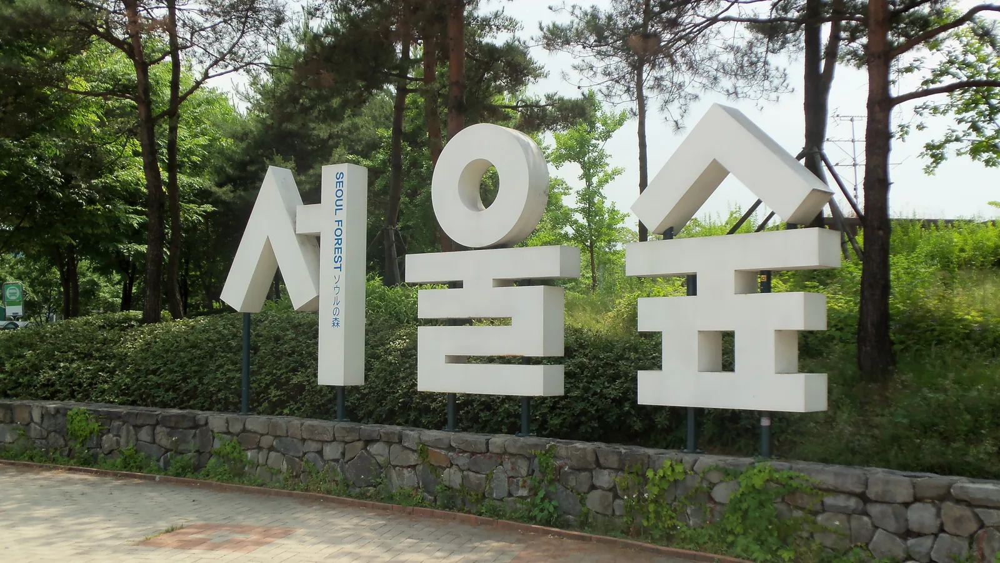

▲ 여의도 한강공원 일대 야경. 한강공원 주차장은 기본 30분 2,000원 수준으로, 도심 사설 주차장보다는 부담이 덜하다 ⓒ Wikimedia Commons
서울은 주차난이 심한 도시로 꼽히지만, 목적지를 잘 고르면 얘기가 달라진다. 무료거나 저렴한 주차가 가능한 명소들을 미리 알아두면 자차 나들이가 한결 편해진다.
1. 여의도 한강공원 — 대형 주차장에 강변 산책까지
▲ 여의도 63빌딩과 한강 야경. 한강공원 주차장은 기본 30분 2,000원, 초과 10분당 300원, 1일 최대 15,000원이 부과된다 ⓒ Wikimedia Commons
여의도 한강공원은 대형 공영 주차장을 갖추고 있어 자차 방문 부담이 적은 편이다. 강변 산책로와 자전거길, 편의시설이 잘 갖춰져 있어 가족 단위 나들이나 데이트 코스로도 인기가 많다. 요금은 기본 30분 2,000원, 초과 10분당 300원, 1일 최대 15,000원으로, 사실 뚝섬·반포·잠실 등 다른 한강공원 주차장(기본 30분 1,000원, 1일 최대 10,000원)보다는 오히려 비싼 편이다. 다만 도심 사설 주차장과 비교하면 여전히 부담이 덜하고, 설날·추석 전날부터 다음날까지 각 3일간은 한강공원 전 주차장이 무료로 개방된다. 장애인 등록 차량은 80%, 경차·저공해차는 50% 감면된다.
2. 서울숲 — 평일이라면 더 여유롭다

▲ 서울숲 공원 입구 표지판. 공영주차장은 5분당 150~200원 수준(시간당 약 1,800~2,400원)의 요금이 적용된다 ⓒ Wikimedia Commons (CC BY-SA 4.0)
서울숲은 도심 속 대형 공원으로, 공영주차장을 운영하고 있다. 요금은 5분당 150~200원(경차는 50% 할인) 수준으로 집계 매체마다 다소 차이가 있어, 정확한 금액은 방문 전 현장이나 서울시 주차정보안내시스템에서 확인하는 것이 좋다. 주말과 벚꽃철 등 성수기에는 혼잡할 수 있지만, 평일에는 상대적으로 여유롭게 주차할 수 있는 편이다. 숲길 산책과 사슴 방사장 등 볼거리도 풍부해 자차 나들이 코스로 무난하다.
3. 경복궁 인근 — 부설·공영주차장을 활용하자
▲ 경복궁 광화문 전경. 경복궁 부설주차장은 1시간 기준 소형 3,000원, 중대형 5,000원이며 초과 10분당 800원이 붙는다 ⓒ Wikimedia Commons
경복궁을 비롯한 고궁 지역은 도심 한복판이라 주차 자체가 부담스러울 수 있지만, 경복궁 부설주차장을 이용하면 도보로 바로 접근할 수 있다. 요금은 1시간 기준 소형 3,000원·중대형 5,000원, 초과 10분당 800원으로 완전 무료는 아니지만, 회차 시 10분 이내는 무료로 처리된다. 주변 세종문화회관·광화문 D타워 인근 공영주차장도 상대적으로 여유 있고 요금이 합리적인 편이라 함께 알아두면 좋다.
4. 서울 자차 나들이 팁
방문 팁
- 주말·공휴일에는 오전 일찍 출발하는 것이 주차 확보에 유리하다.
- 목적지별 공영주차장 위치와 요금을 방문 전 미리 확인하자.
- 대중교통 연계가 가능한 곳이라면 환승 주차도 고려해볼 만하다.
5. 정리
체크포인트
- 여의도 한강공원은 기본 30분 2,000원, 서울숲은 5분당 150~200원 수준이다.
- 경복궁 부설주차장은 1시간 3,000~5,000원으로 완전 무료는 아니다.
- 성수기·주말에는 조기 방문이 주차 확보의 핵심이다.
- 목적지별 주차 요금과 위치는 방문 전 확인하는 것이 안전하다.